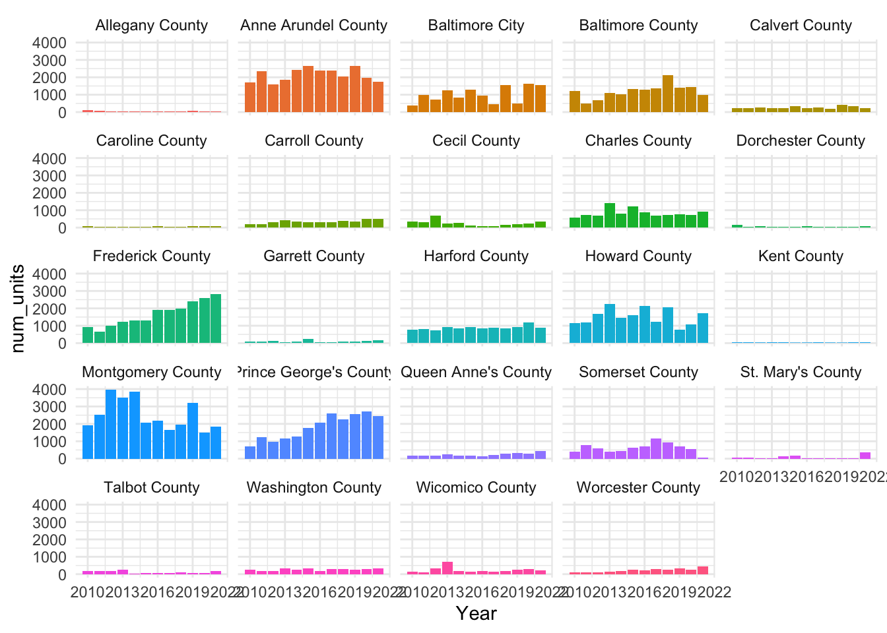
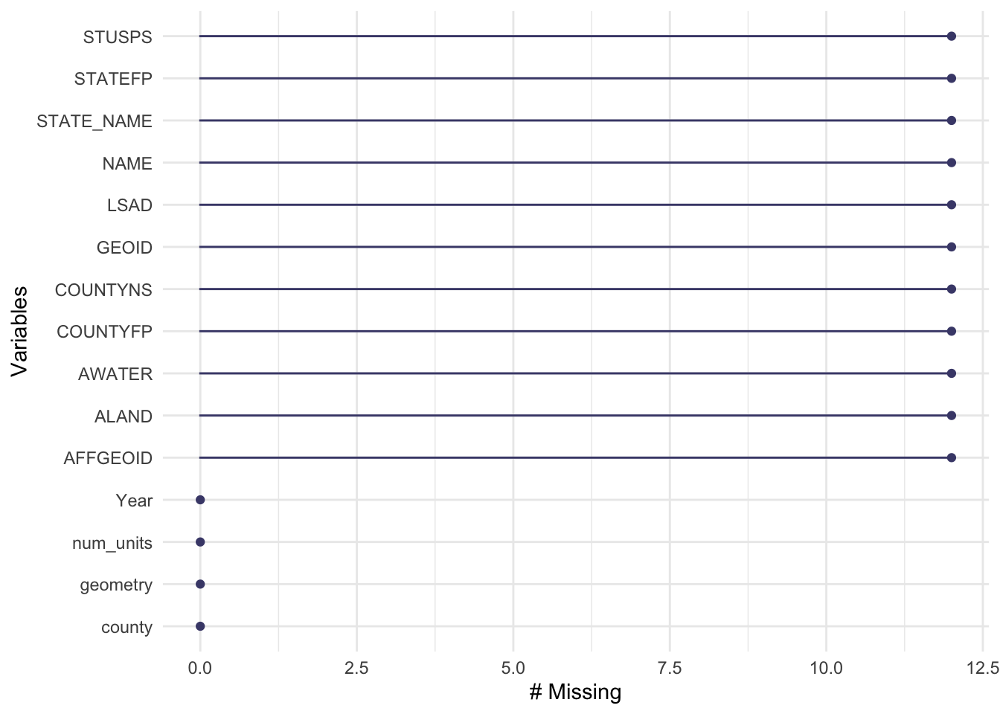
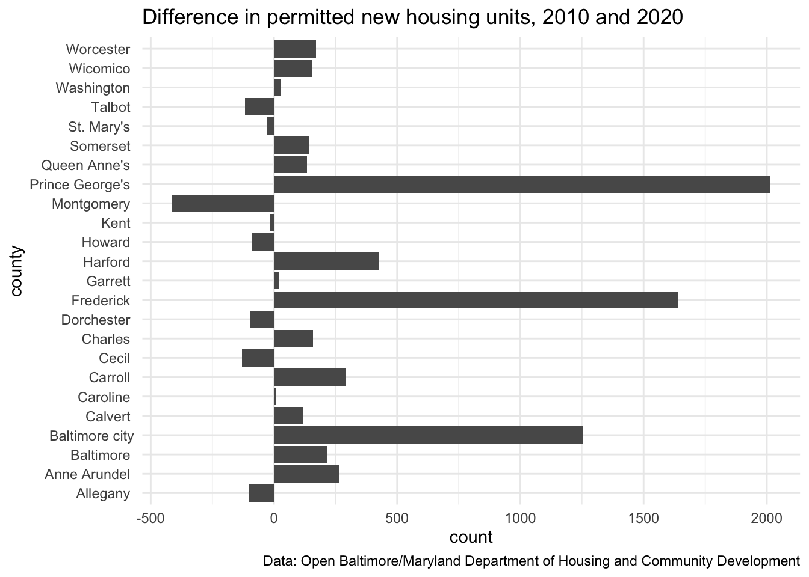
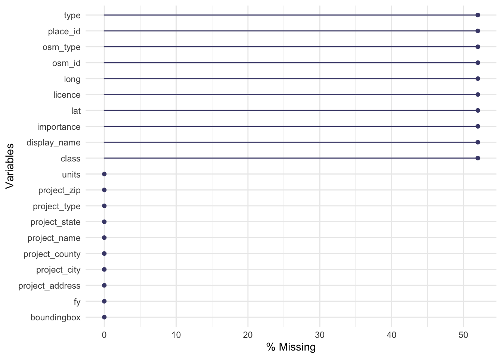

Tidying data in R
Let’s start by with the question: what is tidy data?
- Each value has its own cell.
- Each variable has its own column.
- Each observation has its own row.
To get data into a tidy format, you’ll need to know how to address these common problems (from Tidy data vignette):
- Column headers are values, not variable names.
- Multiple variables are stored in one column.
- Variables are stored in both rows and columns.
- Multiple types of observational units are stored in the same table.
- A single observational unit is stored in multiple tables.
I’ve also highlighted several tips from the The Quartz guide to bad data whenever they are relevant in this exercise.
Note: this particular example requires the {esri2sf} package (I recommend using my fork which incorporated the {httr2} package).
pak::pkg_install("elipousson/esri2sf") # fork of https://github.com/yonghah/esri2sf/Pivoting data frames between wide and long formats
We are going to look at data on total new housing units authorized for construction in Maryland from 2010 to 2021:
new_units <-
readr::read_csv(
"https://opendata.maryland.gov/api/views/c7z9-v9mr/rows.csv",
show_col_types = FALSE
)Take a look at the column names:
colnames(new_units) [1] "Date created" "Year" "MARYLAND"
[4] "Allegany County" "Anne Arundel County" "Baltimore City"
[7] "Baltimore County" "Calvert County" "Caroline County"
[10] "Carroll County" "Cecil County" "Charles County"
[13] "Dorchester County" "Frederick County" "Garrett County"
[16] "Harford County" "Howard County" "Kent County"
[19] "Montgomery County" "Prince George's County" "Queen Anne's County"
[22] "Somerset County" "St. Mary's County" "Talbot County"
[25] "Washington County" "Wicomico County" "Worcester County" 🤔 What variable is being stored in the column names?
Yep. Each column after “year” is a location.
The locations aren’t all the same. They include two different scales: one column covering the whole state and the others covering a single county.
Focusing on the counties, we can “pivot” these columns into a long format where each row has new housing units for just a single year and a single county. We do this with tidyr::pivot_longer() selecting the columns to pivot using the tidyselect::contains() function.
new_units_long <-
tidyr::pivot_longer(
data = new_units,
cols = contains(c("County", "city")),
names_to = "county",
values_to = "num_units"
) %>%
dplyr::select(-c(`Date created`, MARYLAND))Remember to avoid ambiguous field names. I’ve included the units of the value in the column name—making it clear that each number indicates the number of new housing units for that year and county.
In this example, the long format is helpful for a few reasons. First, this long format makes it easy to plot complex data with ggplot2:
ggplot(data = new_units_long) +
geom_col() +
aes(x = Year, y = num_units, fill = county) +
facet_wrap(~ county) +
guides(fill = "none") +
theme_minimal()
Are these data too granular? Using counties as a grouping mean the data includes wide variation in population, size, and housing market conditions. We could consider combining counties into regions or metro area or classifying as urban or rural in order to make interpretation easier.
First, the new location column makes it easy to join spatial data to the data frame with dplyr::left_join():
md_counties <- tigris::counties(state = "MD", cb = TRUE)Retrieving data for the year 2020
|
| | 0%
|
| | 1%
|
|= | 1%
|
|= | 2%
|
|== | 2%
|
|== | 3%
|
|== | 4%
|
|=== | 4%
|
|=== | 5%
|
|==== | 5%
|
|==== | 6%
|
|===== | 7%
|
|====== | 8%
|
|====== | 9%
|
|======= | 10%
|
|======= | 11%
|
|======== | 11%
|
|======== | 12%
|
|========= | 12%
|
|========= | 13%
|
|========== | 14%
|
|========== | 15%
|
|=========== | 16%
|
|============ | 17%
|
|============ | 18%
|
|============== | 20%
|
|============== | 21%
|
|=============== | 21%
|
|=============== | 22%
|
|================ | 23%
|
|================= | 24%
|
|================= | 25%
|
|================== | 25%
|
|================== | 26%
|
|=================== | 27%
|
|=================== | 28%
|
|==================== | 28%
|
|==================== | 29%
|
|===================== | 29%
|
|===================== | 30%
|
|====================== | 31%
|
|====================== | 32%
|
|======================= | 32%
|
|======================= | 34%
|
|======================== | 34%
|
|========================= | 35%
|
|========================== | 37%
|
|========================== | 38%
|
|=========================== | 38%
|
|============================ | 39%
|
|============================ | 40%
|
|=============================== | 44%
|
|=============================== | 45%
|
|================================ | 45%
|
|================================ | 46%
|
|================================= | 46%
|
|================================= | 47%
|
|================================= | 48%
|
|================================== | 48%
|
|================================== | 49%
|
|=================================== | 49%
|
|=================================== | 50%
|
|==================================== | 52%
|
|===================================== | 53%
|
|===================================== | 54%
|
|====================================== | 54%
|
|====================================== | 55%
|
|======================================= | 55%
|
|======================================= | 56%
|
|======================================== | 57%
|
|========================================= | 59%
|
|========================================== | 60%
|
|========================================== | 61%
|
|=========================================== | 61%
|
|=========================================== | 62%
|
|============================================ | 62%
|
|============================================ | 63%
|
|============================================= | 64%
|
|============================================= | 65%
|
|============================================== | 65%
|
|============================================== | 66%
|
|=============================================== | 68%
|
|================================================ | 68%
|
|================================================ | 69%
|
|================================================= | 70%
|
|================================================== | 71%
|
|=================================================== | 73%
|
|==================================================== | 74%
|
|==================================================== | 75%
|
|===================================================== | 75%
|
|===================================================== | 76%
|
|====================================================== | 77%
|
|======================================================= | 78%
|
|======================================================= | 79%
|
|======================================================== | 79%
|
|======================================================== | 80%
|
|======================================================== | 81%
|
|========================================================= | 82%
|
|========================================================== | 82%
|
|========================================================== | 83%
|
|=========================================================== | 84%
|
|=========================================================== | 85%
|
|============================================================ | 85%
|
|============================================================ | 86%
|
|============================================================= | 87%
|
|============================================================= | 88%
|
|============================================================== | 88%
|
|============================================================== | 89%
|
|=============================================================== | 90%
|
|=================================================================== | 96%
|
|==================================================================== | 97%
|
|==================================================================== | 98%
|
|===================================================================== | 99%
|
|======================================================================| 100%Did this join work the way we expected?
If a join didn’t find a match for any of the locations, any new columns will have NAs for the missing values. summary() only shows missing values for numeric values. skimr::skim() does show missing variables but there are a few packages that make these checks easier. {naniar} is specifically designed to work with missing data:
naniar::gg_miss_var(new_units_counties)
Whoops. More than 10 unmatched rows. Which locations didn’t get a match? We can filter to look for NA values and then use distinct() on the join column.
# A tibble: 1 × 1
county
<chr>
1 Baltimore CityOK. So the only columns that didn’t match are those for Baltimore City. Let’s take a look at the join column from md_counties to see what we can figure out.
unique(new_units_long$county) [1] "Allegany County" "Anne Arundel County" "Baltimore County"
[4] "Calvert County" "Caroline County" "Carroll County"
[7] "Cecil County" "Charles County" "Dorchester County"
[10] "Frederick County" "Garrett County" "Harford County"
[13] "Howard County" "Kent County" "Montgomery County"
[16] "Prince George's County" "Queen Anne's County" "Somerset County"
[19] "St. Mary's County" "Talbot County" "Washington County"
[22] "Wicomico County" "Worcester County" "Baltimore City" unique(md_counties$NAMELSAD) [1] "Queen Anne's County" "Wicomico County" "Garrett County"
[4] "Prince George's County" "Caroline County" "St. Mary's County"
[7] "Anne Arundel County" "Calvert County" "Worcester County"
[10] "Harford County" "Montgomery County" "Talbot County"
[13] "Dorchester County" "Cecil County" "Carroll County"
[16] "Washington County" "Frederick County" "Howard County"
[19] "Kent County" "Baltimore County" "Allegany County"
[22] "Somerset County" "Charles County" "Baltimore city" 🤔 Do you see the problem?
Hint: join columns are case sensitive. “Baltimore City” is not the same as “Baltimore city”.
One solution is to record the county variable using dplyr::mutate() and dplyr::case_when():
The wide format can also be helpful! For example, if we pivot wider and put the years into columns it makes it easy to compare one year to another with the mutate() or transmute() function:
new_units_wide <-
pivot_wider(
# Note: if we didn't drop the geometry we would get an error
sf::st_drop_geometry(new_units_counties),
id_cols = "county",
names_from = "Year",
values_from = "num_units"
)
new_units_wide <- new_units_wide %>%
mutate(
diff_num_units_10_15 = .data[["2020"]] - .data[["2015"]],
diff_num_units_10_20 = .data[["2020"]] - .data[["2010"]]
)
new_units_wide %>%
mutate(
county = stringr::str_remove(county, "County$")
) %>%
ggplot() +
geom_bar(aes(x = county, weight = diff_num_units_10_20)) +
coord_flip() +
scale_color_gradient2(low = "red", mid = "white", high = "blue") +
theme_minimal() +
labs(
title = "Difference in permitted new housing units, 2010 and 2020",
caption = "Data: Open Baltimore/Maryland Department of Housing and Community Development"
)
OK. Your turn. The open data on permitted multi-family units is also wide—placing the data for each county in adjoining columns.
new_multifamily_units <-
readr::read_csv(
"https://opendata.maryland.gov/api/views/pz3y-chyn/rows.csv",
show_col_types = FALSE
)🤔 Can you convert the data into a long format with pivot_longer()?
new_multifamily_units <-
pivot_longer(
new_multifamily_units,
cols = contains(c("County", "City")),
names_to = "county",
values_to = "num_units"
)
new_multifamily_units# A tibble: 288 × 5
`Date created` Year MARYLAND county num_units
<dttm> <dbl> <dbl> <chr> <dbl>
1 2022-10-19 00:00:00 2010 3442 Allegany County 66
2 2022-10-19 00:00:00 2010 3442 Anne Arundel County 847
3 2022-10-19 00:00:00 2010 3442 Baltimore County 635
4 2022-10-19 00:00:00 2010 3442 Calvert County 2
5 2022-10-19 00:00:00 2010 3442 Caroline County 0
6 2022-10-19 00:00:00 2010 3442 Carroll County 0
7 2022-10-19 00:00:00 2010 3442 Cecil County 68
8 2022-10-19 00:00:00 2010 3442 Charles County 0
9 2022-10-19 00:00:00 2010 3442 Dorchester County 96
10 2022-10-19 00:00:00 2010 3442 Frederick County 95
# … with 278 more rowsWorking with long format data
Now that we have both datasets in a long format we can put the two together.
How should we do that? One option is to use a join based the year and county name.
md_housing_units_wide <-
left_join(
new_units_long,
new_multifamily_units_long %>%
rename(
num_multifamily_units = num_units
),
by = c("Year", "county")
)Using left_join() places the columns side-by-side in a wide format. What new variables that can we create by working with columns in this format?
# md_housing_units_wide <-
# md_housing_units_wide %>%
# mutate(
#
# )This works for two datasets but you can also stack even more data frames into a long format. Using the .id parameter allows you to use the names assigned to each dataframe as a new column identifying the source of the data:
md_housing_units_long <-
bind_rows(
"total" = new_units_long,
"multifamily" = new_multifamily_units_long,
"singlefamily" = new_singlefamily_units_long,
.id = "type"
)If we have year, permit type, and number of units in a “tidy” format, this creates new opportunities for both for visualization and for analysis using {tidyverse} packages.
To see how this works for visualization, try filtering the md_housing_units_long to a single county and using geom_col() to make a bar chart showing both the total and multifamily housing units by year for that county? I filled a few details already—you’ll want to set fill = type and position = "dodge" (note, position is an additional parameter outside the aesthetic mapping)—but you still need to filter the data and provide the required x and y aesthetics for geom_col().
# md_housing_units_long %>%
# filter() %>%
# ggplot() +
# geom_col(aes(x = , y = , fill = type), position = "dodge")To see how this works for analysis, consider how you can use group_by() and summarise() to create summary statistics by county and permit type.
new_multifamily_units %>%
group_by(county) %>%
summarise(
cum_sum_units = sum(num_units),
avg_units = mean(num_units),
min_units = min(num_units),
max_units = max(num_units)
)Error in `group_by()`:
! Must group by variables found in `.data`.
✖ Column `county` is not found.Using factors for categorical data
md_counties_xwalk <-
tibble::tribble(
~county, ~region, ~msa,
"Garrett County", "Western Maryland", NA,
"Allegany County", "Western Maryland", "Cumberland, MD-WV MSA",
"Washington County", "Western Maryland", "Hagerstown–Martinsburg, MD–WV MSA",
"Frederick County", "Capital Region", "Washington–Arlington–Alexandria, DC–VA–MD–WV MSA",
"Montgomery County", "Capital Region", "Washington–Arlington–Alexandria, DC–VA–MD–WV MSA",
"Prince George's County", "Capital Region", "Washington–Arlington–Alexandria, DC–VA–MD–WV MSA",
"Anne Arundel County", "Central Maryland", "Baltimore–Columbia–Towson MSA",
"Baltimore city", "Central Maryland", "Baltimore–Columbia–Towson MSA",
"Baltimore County", "Central Maryland", "Baltimore–Columbia–Towson MSA",
"Carroll County", "Central Maryland", "Baltimore–Columbia–Towson MSA",
"Harford County", "Central Maryland", "Baltimore–Columbia–Towson MSA",
"Howard County", "Central Maryland", "Baltimore–Columbia–Towson MSA",
"Calvert County", "Southern Maryland", "Washington–Arlington–Alexandria, DC–VA–MD–WV MSA",
"Charles County", "Southern Maryland", "Washington–Arlington–Alexandria, DC–VA–MD–WV MSA",
"St. Mary's County", "Southern Maryland", "California-Lexington Park, MD MSA",
"Kent County", "Eastern Shore", NA,
"Queen Anne's County", "Eastern Shore", "Baltimore–Columbia–Towson MSA",
"Talbot County", "Eastern Shore", "Easton, MD μSA",
"Caroline County", "Eastern Shore", NA,
"Dorchester County", "Eastern Shore", "Cambridge, MD",
"Wicomico County", "Eastern Shore", "Salisbury, MD-DE MSA",
"Somerset County", "Eastern Shore", "Salisbury, MD-DE MSA",
"Worcester County", "Eastern Shore", "Salisbury, MD-DE MSA",
"Cecil County", "Eastern Shore", "Philadelphia-Camden-Wilmington, PA-NJ-DE-MD"
)forcats::as_factor()Error in UseMethod("as_factor"): no applicable method for 'as_factor' applied to an object of class "NULL"Tidying addresses for geocoding
multifamily_housing <-
readr::read_csv(
"https://opendata.maryland.gov/api/views/cadm-spqd/rows.csv",
name_repair = janitor::make_clean_names,
show_col_types = FALSE
)
multifamily_housing <-
dplyr::bind_cols(
multifamily_housing,
project_state = "MD"
)Using regular expressions
multifamily_housing_geo_osm <-
tidygeocoder::geocode(
multifamily_housing[1:50, ],
street = "project_address",
city = "project_city",
county = "project_county",
state = "project_state",
method = "osm",
full_results = TRUE
)Passing 50 addresses to the Nominatim single address geocoderQuery completed in: 50.3 secondsDid that work? Well, when I check, I can see I am missing latitude and longitude for more than half of our addresses. 😬
naniar::gg_miss_var(multifamily_housing_geo_osm, show_pct = TRUE)
[1] "6652 Shelly Avenue"
[2] "8219 and 8221 Oakwood Road"
[3] "8900 Manchester Road 8902 8904 9000 Manchester Rd"
[4] "341 E. 20th Street"
[5] "6349 Boston Street"
[6] "7667 N Maple Avenue"
[7] "1507 Ray Road"
[8] "111 Mitchell Street"
[9] "4300 Maple Shade Drive 4400-4412 Grape Vine Way; and 4401-"
[10] "838 W. Fairmount Avenue"
[11] "18 W. Read Street"
[12] "45790 Military Lane"
[13] "1125 N. Patterson Park Avenue"
[14] "301 W. Madison Street"
[15] "1500 W. Fayette Street"
[16] "3202 Reed Street"
[17] "7513 Maple Avenue"
[18] "402 E. Second Street"
[19] "400 N. Athol Road"
[20] "1029 E. Baltimore Street"
[21] "93-108 Mt. Vernon Street"
[22] "30500 Riggin Street"
[23] "5511 Halpine Place"
[24] "4300 Cardwell Avenue"
[25] "1303 Greenmount Avenue"
[26] "4300 Frederick Avenue" messy_counties <-
tibble::tribble(
~county,
"Balt. City",
"Baltimore",
"Balt. Co.",
"BALTIMORE COUNTY",
"Bmore MD",
"Biltimore",
"Baltimor",
"Baltimore",
"Baltimore city",
"Baltimore County",
"Baltimore county",
"Anne Arundel County",
"Ann Arundel County",
"Arundel",
"Anne Arundel"
)
messy_counties %>%
mutate(
address = str_replace(address, "Shelley Road", "Shelley Avenue")
county = case_when(
str_detect(county, "Arundel|Arundle") ~ "Anne Arundel County",
str_detect(county, "city|City") ~ "Baltimore city",
str_detect(county, "Co.|County") ~ "Baltimore County",
TRUE ~ "Baltimore city"
)
)Error: <text>:24:5: unexpected symbol
23: address = str_replace(address, "Shelley Road", "Shelley Avenue")
24: county
^multifamily_housing_geo_census <-
tidygeocoder::geocode(
multifamily_housing[1:50, ],
street = "project_address",
city = "project_city",
state = "project_state",
method = "census",
full_results = TRUE
)Passing 50 addresses to the US Census batch geocoderQuery completed in: 1.6 seconds🤔 How did that go? What approach would you use to check from missing data?
Separating variables with separate()
neighborhoods <- sf::read_sf(
dsn = here::here("files/data/neighborhoods.geojson")
)
permits <-
esri2sf::esri2sf(
url = "https://egisdata.baltimorecity.gov/egis/rest/services/Housing/DHCD_Open_Baltimore_Datasets/FeatureServer/3",
bbox = neighborhoods[63,]
)✔ Downloading "Building Permits" from
<]8;;https://egisdata.baltimorecity.gov/egis/rest/services/Housing/DHCD_Open_Baltimore_Datasets/FeatureServer/3https://egisdata.baltimorecity.gov/egis/rest/services/Housing/DHCD_Open_Baltimore_Datasets/FeatureServer/3]8;;>
Layer type: "Feature Layer"
Geometry type: "esriGeometryPoint"
Service CRS: "EPSG:2248"
Output CRS: "EPSG:4326"